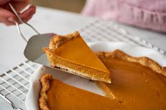

Homemade recipes
Pumpkin Pie Recipe
Ingredients
- 4 oz. cream cheese
- 1 Tablespoon Milk
- 1 Tablespoon Sugar
- 1 1/2 cup Thawed Cool Whip
- 1 package Graham Crackers
- 1 cup cold milk
- 1 16 oz can Pumpkin
- 2 packages vanilla instant pudding
- 1 teaspoon cinnamon
- 1/2 teaspoon ginger
- 1/4 teaspoon ground cloves
- 1 stick butter
Steps
- Ground graham crackers and add melted butter and sprinkle sugar until desired thickness, form crust and chill.
- Mix pumpkin, cold milk, vanilla pudding, cinnamon, ginger, and ground cloves in large bowl.
- Put pumpkin mixture ontop of crust and chill.
- Mix cream cheese, milk, sugar, and thawed cool whip in large bowl.
- Place cream ontop of pumpkin and chill for 4 hours.
- Serve.
